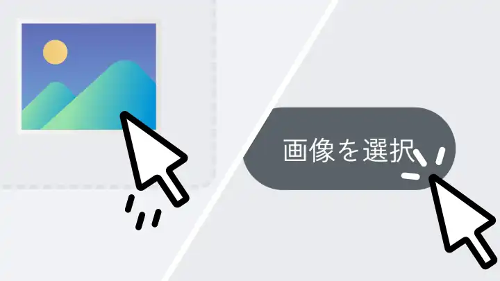
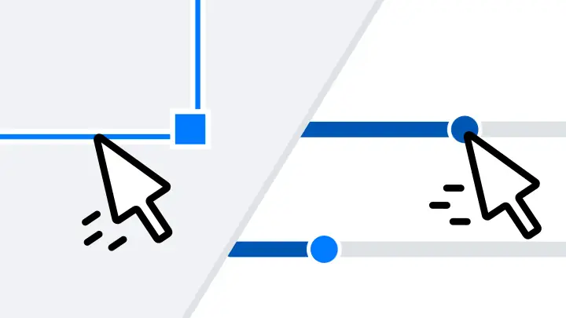
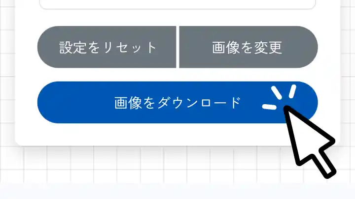
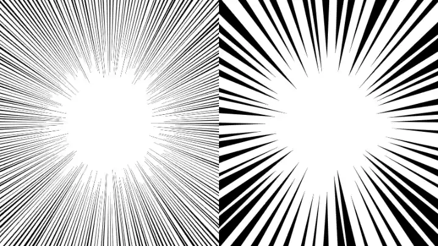
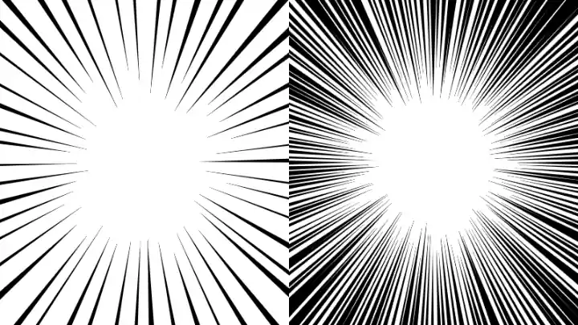
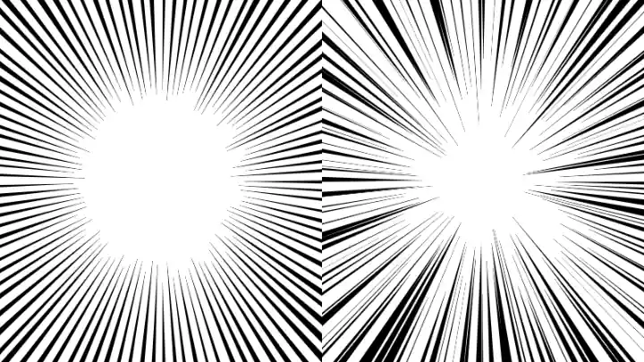

集中線メーカーの特徴
無料・広告なし
すべての機能を無料でご利用いただけます。煩わしい広告は一切ありません。
簡単カスタマイズ
集中線の色、太さ、本数、基準位置などを直感的に調整できます。
プライバシー保護
ブラウザ内で動作します。画像がサーバーに送信されることはありません。
商用利用OK
作成した画像は、個人利用・商用利用を問わず自由にご利用いただけます。
使い方
1

画像をアップロード
「画像を選択」ボタンまたはドラッグ＆ドロップで、加工したい画像をアップロードします。
2

範囲と設定を調整
青い枠をドラッグ＆リサイズして基準とする範囲を決め、設定パネルで線の色や太さを調整します。
3

画像をダウンロード
「画像をダウンロード」ボタンを押すと、集中線が追加された画像が保存されます。
集中線とは
集中線は、漫画やイラスト、広告デザインなどで広く使われる表現技法の一つです。ある一点から放射状に伸びる直線を描くことで、視線を中心に誘導し、特定の対象を強調する効果があります。
驚きや焦りといった感情の表現、スピード感の演出、あるいは単に読者の注意を引きたい場面など、様々なシーンで活用されています。このツールなら、誰でも手軽に集中線を使って、自分の画像をより印象的に仕上げられます。
設定のコツ

線の太さ
細い線は繊細でスピード感のある印象に。太い線はコミカルでパワフルな印象を与えます。

線の本数
本数が少ないとスッキリした印象に。多くすると密度が増し、より強いインパクトを生み出します。

ランダム性
値を大きくすると、線の長さや配置に「揺らぎ」が加わり、手書きのような温かみや荒々しさを表現できます。